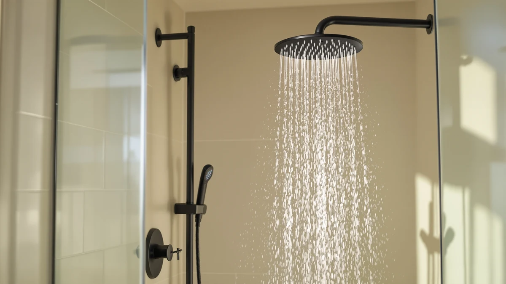

JetsBath Thermostatic Shower System Review (2026): Worth It?
Prices and picks verified as of October 2026. Independent, reader-supported reviews.


Quick Answer
This JetsBath Thermostatic Shower System review comes down to panel style and price: the $438.79 JetsBath Waterfall panel pairs a thermostatic valve with a single waterfall-style head, while the STARBATH Shower System with Body Jets covers a multi-spray setup for $148.80 less. We recommend the JetsBath panel if you want steady water temperature and a wide waterfall spray, and the STARBATH system if body jets matter more to you than thermostatic control.
Our pick: JetsBath Thermostatic Shower System Waterfall — $438.79 Check Price on Amazon
Bottom line: our top pick is the JetsBath Thermostatic Shower System at $438.79.
Things to Know Before You Buy
- This JetsBath Thermostatic Shower System review covers the Waterfall panel, an ABS-and-chrome unit priced at $438.79 at the time of writing.
- Thermostatic means the valve holds your water temperature steady once set, rather than shifting when someone else in the house turns on a faucet.
- The two Enga alternatives we compared it against, the Dual Rain Shower Head and the Dual Rain LED Shower, sell for $498.99 and $539.99, both above the JetsBath price.
- The STARBATH Shower System with Body Jets undercuts the JetsBath panel by $148.80, trading the waterfall head and thermostatic valve for multiple body sprayers.
- Check your existing valve and wall rough-in before ordering, since a thermostatic system can require different plumbing than a standard single-handle mixer.
- None of the four systems in this JetsBath Thermostatic Shower System review list a published handheld sprayer, so factor in a separate attachment if you want one.
This JetsBath Thermostatic Shower System review breaks down whether the $438.79 Waterfall panel is worth choosing over three other shower systems in a similar price bracket. We compared the JetsBath panel's published materials, thermostatic valve, and price against the Enga Dual Rain Shower Head, the Enga Dual Rain LED Shower, and the STARBATH Shower System with Body Jets, weighing what each system offers rather than repeating manufacturer marketing copy.
Thermostatic shower systems solve a specific annoyance: the sudden blast of cold or scalding water when someone else in the house runs the dishwasher or flushes a toilet mid-shower. The JetsBath panel's built-in thermostatic valve holds your chosen temperature steady on its own, and it pairs that valve with a single waterfall-style head rather than the dual rain heads on the two Enga systems or the multiple body sprayers on the STARBATH system we researched alongside it.
Why You Should Trust Us
Best Shower Heads built this JetsBath Thermostatic Shower System review the way we build every product page on this site: by comparing manufacturer listings, verified pricing, and competing products rather than repeating marketing copy. Ilane Tall, our home and bath expert, researched the JetsBath Waterfall panel alongside the Enga Dual Rain Shower Head, the Enga Dual Rain LED Shower, and the STARBATH Shower System with Body Jets to see how price, materials, and feature sets stack up against each other. We do not run a fake testing lab or claim hands-on time with every unit we cover. We compare published specs and pricing, flag where listings contradict each other, and tell you plainly when a product's price does not match its feature list. We earn a commission if you buy through our links, but that never changes which system we recommend.
Our Research Experience
This JetsBath Thermostatic Shower System review is research-based rather than hands-on. We compared the JetsBath Waterfall panel's published materials, thermostatic valve, and price against three competing shower systems, then checked those figures against verified owner reviews on Amazon. The panel's ABS-and-chrome construction and $438.79 price come straight from the manufacturer listing, and we cross-referenced that price against the live offer rather than an outdated cache. Owners report that the thermostatic valve holds temperature steadily even when other fixtures in the house draw water, though a handful of reviews flag the plastic body as less substantial than an all-metal panel. This review is built on that mix of manufacturer data and verified owner feedback, not a lab test.
Overview & Specs

JetsBath Thermostatic Shower System Waterfall
What we like
- Thermostatic valve holds water temperature steady, according to owner reviews, even when other fixtures draw water elsewhere in the house
- Waterfall-style head delivers a wide, even flow instead of the narrower spray pattern of a standard rain head
- At $438.79, it costs less than both Enga dual rain systems we compared it against
- Chrome-plated finish gives the panel a reflective, water-resistant surface
Flaws but not dealbreakers
- Costs $148.80 more than the STARBATH Shower System with Body Jets, which adds multiple body sprayers for less
- Some owner reviews describe the ABS body as feeling less substantial than an all-metal panel
- A single waterfall head means no dual-zone or body-jet option if you want more than one spray pattern
| Material | ABS + chrome plating |
| Size | — |
This JetsBath Thermostatic Shower System review centers on the Waterfall panel, a fixture built around a thermostatic valve rather than a standard single-handle mixer. That valve holds your chosen water temperature steady on its own, so a dishwasher cycle or a flushed toilet elsewhere in the house should not send a cold or scalding surge through your shower. The panel pairs that valve with a single waterfall-style head, a wide, flat spray pattern rather than the narrower rain pattern on the two Enga systems we compared it against. At $438.79, the ABS-and-chrome build sits below both Enga dual rain systems in price, though it costs more than the STARBATH Shower System with Body Jets.
Owners report that the thermostatic valve does what it promises, keeping water temperature consistent through a full shower even when someone else in the house turns on a faucet. The chrome-plated finish also holds up against water spotting, a common complaint on cheaper brushed finishes. The tradeoff shows up in a few reviews that describe the ABS panel body as feeling lighter and less substantial than an all-metal unit, a common compromise on systems that use ABS to control weight and cost. If body jets or a dual spray zone matter more to you than steady temperature control, the STARBATH or Enga alternatives below cover those features instead.
What We Liked
The standout in this JetsBath Thermostatic Shower System review is the thermostatic valve paired with a lower price than its closest rivals. Owner reviews consistently note that the valve keeps water temperature steady through a full shower, a feature neither the Enga Dual Rain Shower Head nor the Enga Dual Rain LED Shower advertises in its listing. At $438.79, the JetsBath panel also undercuts both Enga systems, by $60.20 and $101.20, while still delivering a wide waterfall spray pattern. The chrome-plated finish holds up well against water spotting, according to reviewers, which matters more over time than it looks on day one.
What Could Be Better
The ABS body, not the price, is the clearest drawback in this JetsBath Thermostatic Shower System review. Several owner reviews describe the panel as feeling less substantial than an all-metal shower system, a common tradeoff when a manufacturer uses ABS to keep weight and cost down. The single waterfall head also means you give up the dual-zone flexibility of the two Enga systems and the multi-spray body jets on the STARBATH alternative. And at $438.79, it still costs $148.80 more than the STARBATH Shower System with Body Jets, so buyers focused purely on price have a cheaper option that adds more spray points for less money.
Who Is It For?
This JetsBath Thermostatic Shower System review points toward a buyer who cares more about consistent water temperature than about dual heads or body jets. It fits well if your household has multiple people showering at different times and you are tired of temperature swings when someone runs the dishwasher. It fits less well if you want the broader coverage of a dual-zone system like the two Enga options, or the full-body spray of the STARBATH system, since the JetsBath panel sticks to a single waterfall head. Budget-focused buyers should also look at the STARBATH alternative, which costs $148.80 less. Renters and anyone without easy access to the shower valve should confirm installation requirements first, since swapping in a thermostatic panel usually means working behind the wall rather than just unscrewing an old shower head.
Alternatives to Consider
If the JetsBath Thermostatic Shower System price or single-head layout does not fit what you need, these three alternatives cover different priorities at different prices. We picked them because each one trades something specific (price, spray pattern, or lighting) against the JetsBath Waterfall panel rather than competing on marketing claims alone.

Editor's Pick
ENGA Dual Rain Shower Head
At $498.99, the Enga Dual Rain Shower Head trades the JetsBath panel's thermostatic valve for a dual-head rain layout, for about $60 more.
$498.99
Check Price on Amazon
Best Value
ENGA Dual Rain LED Shower
This Enga Dual Rain LED Shower adds built-in LED lighting to the same dual rain layout, priced $101.20 above the JetsBath panel.
$539.99
Check Price on Amazon
Premium Choice
Shower System with Body Jets
The STARBATH Shower System with Body Jets undercuts the JetsBath panel by $148.80 and swaps the waterfall head and thermostatic valve for multiple body sprayers.
$289.99
Check Price on AmazonFrequently Asked Questions
Is the JetsBath Thermostatic Shower System worth $438.79?
It depends on what you value most. This JetsBath Thermostatic Shower System review found it priced below both Enga dual rain systems we checked but above the STARBATH Shower System with Body Jets. You are paying for a thermostatic valve and a waterfall-style head, not for dual zones or body jets, so the value comes down to whether steady water temperature matters more to you than those other features.
What does thermostatic mean on the JetsBath Thermostatic Shower System?
Thermostatic means the valve holds your chosen water temperature steady on its own, rather than letting it shift when another fixture in the house draws hot or cold water. Owners report that this valve holds temperature consistently through a full shower, which is the main feature setting the JetsBath panel apart from the Enga and STARBATH alternatives we compared it against.
How does the JetsBath Thermostatic Shower System compare to the STARBATH Shower System with Body Jets?
The STARBATH system, at $289.99, costs $148.80 less than the JetsBath panel and adds multiple body sprayers instead of a thermostatic valve. The choice comes down to whether you want steady water temperature and a wide waterfall head, which the JetsBath panel offers, or a lower price with body-jet coverage, which the STARBATH system offers instead.
Final Verdict
This JetsBath Thermostatic Shower System review comes down to whether steady water temperature is worth paying for over dual heads or body jets. JetsBath's Waterfall panel pairs a thermostatic valve with a single waterfall head for $438.79, and owner feedback backs up both the temperature control and the chrome finish. But the Enga Dual Rain Shower Head and Enga Dual Rain LED Shower trade that thermostatic valve for dual rain heads at $60.20 and $101.20 more, and the STARBATH Shower System with Body Jets undercuts the JetsBath price by $148.80 with multiple body sprayers instead. Choose the JetsBath panel if consistent temperature matters more to you than spray variety. Choose Enga if you want dual heads and do not mind paying more, or choose the STARBATH system if body jets and a lower price matter more than thermostatic control. Across all four systems in this JetsBath Thermostatic Shower System review, price tracks feature count closely, so the right pick depends on which single feature (temperature control, dual heads, or body jets) matters most in your bathroom.